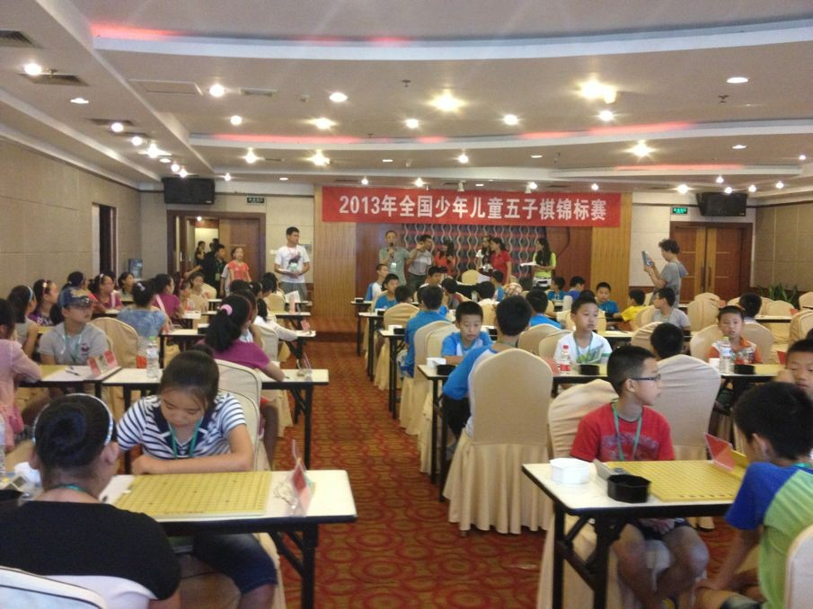

2013年全国少年儿童五子棋锦标赛今日开战
#1 <font color="red">2013年全国少年儿童五子棋锦标赛今日开战</font> 作者：小丸.net 发表时间：2013-7-19 8:37:38
2013年全国少年儿童五子棋锦标赛今日上午在浙江宁波开战，来自全国各地的近280名棋手分成8个组别参加7轮的角逐。

今天，来自全国的少年儿童五子棋高手悉数登场，其中浙江高手戴宇轩、张建业等将与来自上海的袁嘉胤、印周灏，以及南通高手郭钒逸、陈泽宇共同争夺少年男甲的冠军。而女甲中，刚刚夺得上海十项系列赛的康绸一骑绝尘，来自上海的黄心怡，徐佳昕能否阻挡，南通组合陆梦溪、徐颖、纪香是否能以一套组合拳确保前三的两个名额，同时南下的那威俱乐部队的曹雪钰、高雨桐是否能脱颖而出，我们拭目以待。
其它组别，南通的周楠，风云组合的另外一名高手谢雨晨、由兰志仁担任教练的石家庄队的赵轩昂、范佳扬、台州队的徐毅宽等棋手，也将在男子的另外一个组别混战。
儿童组大多都是新人，但是在多名中国国内有名棋手担任教练的的情况下，实力不容小视。280名棋手将给我们带来一场盛宴，让我们一起共同分享这一顿饕餮大餐。
［此帖子已被 小丸.net 在 2013-7-19 8:38:15 编辑过］
#2 Re:2013年全国少年儿童五子棋锦标赛今日开战 作者：掌棋如烟 发表时间：2013-7-19 8:41:53
居然有280人！果然是百娃大战！！#3 Re:2013年全国少年儿童五子棋锦标赛今日开战 作者：冰雪笑醉 发表时间：2013-7-19 8:50:22
 我怎么可能虚报呢？
我怎么可能虚报呢？
#4 Re:2013年全国少年儿童五子棋锦标赛今日开战 作者：黄药师 发表时间：2013-7-19 9:27:45
这是少年组的比赛场地好像是100人左右。另外有个大场地大约170+人
#5 Re:2013年全国少年儿童五子棋锦标赛今日开战 作者：屏蔽 发表时间：2013-7-19 13:41:34
流光容易把人抛 红了樱桃 绿了芭蕉